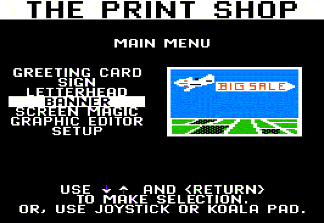

Documentation as Code Balancing Writing & Delivery with Asciidoctor Welcome everyone!
Today, I’m going to talk about how you can improve your documentation process, from writing to delivery, by treating documentation as code.
What we’re talking about here is reusing the tools and process for writing that you’re already using for software development.
But before we get to that, I want to share my earliest memory of publishing and how it relates to challenges in technical writing today.
My first computer system was an Apple II with an ImageWriter.
Anyone old enough to remember that setup?
It was truly a magical machine of entertainment and possibility.
Best of all, it came bundled with The Print Shop!

My siblings and I went nuts using The Print Shop to make signs and banners and greeting cards.
As a matter of fact, there were a few years there when I thought Hallmark would go out of business because we were making so many birthday cards ourselves.
My go-to pick among the assortment of fonts, graphics, and borders was definitely the skull and crossbones.
I was told after a few times that, while cool, it wasn’t necessarily the best choice for birthday cards.
Whatever.
I’d just go on to use to make that most important of adolescent items: a sign for my bedroom door that read, “Keep Out!”
Using The Print Shop, of course, involved printing.
Back then, we didn’t all carry around screens in our pockets, so printing was how we’d share our creations with the world.
Printing those signs, banners, and cards was really my first experience publishing content.
What an amazing sense of power it gave me.
I could write and have those words transformed into something material, tangible, and bigger than what was on the screen.
And my words affected other people.
It was such a thrill.
Your browser does not support the video element. Now, on the practical side of things, printing was not a speedy process.
Once the printer revved up, it would screech and jerk in a flurry of perpetual commotion until the job was complete.
Watching the printer’s automation was fascinating, but would quickly put you into a trance.
So we’re talking walk-away-and-come-back-in-an-hour kind of speed.
Besides, the printer ribbons only lasted so long and required a special trip to the store to replace.
So my message—my content—had to be chosen wisely for optimum effect and impact, and to keep my parent’s grievances about using up the ribbon to a minimum.
I also had to share this computer with my siblings.
And you know there’s nothing more fierce than sibling competition.
We all had something to say and each of us wanted our message to be the one published for the world to see.
Since each print job would completely tie up the computer, we were forced to work together by circumstance.
So this was not only my first publishing experience, but also my first collaborative / argumentative one.
Technical content today is not far removed from my childhood print shop.
We still have to choose our words wisely.
We must collaborate with others on the creation of that content.
And, of course, seeing our words published out in the world is still just as thrilling.
To get there, we need a content workflow that ensures maximum reuse and facilitates strong collaboration while, at the same time, gives us the flexibility to transform that content however we want and to publish it wherever it needs to go automatically—and as quickly as possible.
The best way to fulfill all these demands…
…is to separate content and presentation.
That way, you can adapt your content to ever-changing stakeholder initiatives and an evolving technology landscape.
But there’s a careful balance that must be achieved to avoid hindering:
creation (reveal) , publication (reveal) , or collaboration (reveal) . That’s a balance I believe Asciidoctor strikes.
In this talk, we’ll evaluate Asciidoctor through the lens of these three capabilities in order to investigate its viability and its strengths and to learn how to get the most out of it.
Any good content system should score well in all three.
Creation
I’ll start with the writers in the room.
Rest assured, I’m with you.
Like you, I believe content is king.
I also believe a content system won’t be sustainable if it doesn’t consider the needs of the author first.
Writers need a system that allows them to do what they do best.
But many content systems seem determined to make this fundamental task as difficult as possible.
For the writer, these systems can feel cumbersome, complicated, and downright frustrating.
And that’s tragic.
<?xml version="1.0" encoding="UTF-8"?>
<article xmlns="http://docbook.org/ns/docbook" version="5.0"
xmlns:xl="http://www.w3.org/1999/xlink" xml:lang="en" >
<info>
<title> Documentation as Code</title>
<date> 2016-11-02</date>
<author>
<personname>
<firstname> Author</firstname>
<surname> Name</surname>
</personname>
<email> author@example.org</email>
</author>
<authorinitials> AN</authorinitials>
<revhistory>
<revision>
<revnumber> 1.0.0</revnumber>
<date> 2016-11-02</date>
<authorinitials> AN</authorinitials>
</revision>
</revhistory>
</info>
<abstract>
<simpara> Start with an abstract— the façade of your article.</simpara>
</abstract>
...DocBook DocBook is an XML schema that’s highly structured and semantic with a keen focus on separating content and presentation.
So far, so good, right?
...
<section xml:id="_beginning" >
<title> Beginning</title>
<itemizedlist>
<listitem>
<simpara> Mission</simpara>
</listitem>
<listitem>
<simpara> Goals</simpara>
</listitem>
</itemizedlist>
</section>
<section xml:id="_middle" >
<title> Middle</title>
<programlisting language="ruby" linenumbering="unnumbered" > <![CDATA[
Asciidoctor.convert_file 'example.adoc', safe: :safe
]]> </programlisting>
<informalfigure>
<mediaobject>
<imageobject>
<imagedata fileref="screenshot.png" />
</imageobject>
<textobject>
<phrase> Screenshot</phrase>
</textobject>
</mediaobject>
</informalfigure>
...Oh, you thought that was it?
As a writer, would you want to weave your content in and out of this web day-in and day-out?
Yeah, I didn’t think so.
You have to enclose every chunk of content in an envelope of markup.
Your content gets shackled by this heavy structure.
And there’s the added burden of having to remember all the tags and when to use each of them.
The ironic part is that the engineer didn’t do herself much of a favor either.
XML tools—especially the ones used in the DocBook toolchain, such as XSLT—are a pain to work with.
Nobody wins.
\documentclass {article}
\usepackage [utf8]{inputenc}
\usepackage {graphicx}
\begin {document}
\title {Documentation as Code}
\author {Author Name}
\maketitle
\tableofcontents
\begin {abstract}
Start with an abstract\textemdash {}\hspace {0em}the façade of your article.
\end {abstract}
\section {Beginning}
Here's the text of your introduction.
\begin {itemize}
\item {} Mission
\item {} Goals
\end {itemize}
\section {Middle}
\begin {listing1}[language=ruby,firstnumber=1,]
Asciidoctor.convert_file 'example.adoc', safe: :safe
\end {listing1}
\begin {figure}
\centering
\includegraphics [width=\imgwidth,height=\imgheight]{images/screenshot.png}
\end {figure}
\begin {DBKadmonition}{}{Note}
All good things must come to an end.
\end {DBKadmonition}
\section {End}
\textquotedblleft {}That's all, folks!\textquotedblright {}
\end {document}How about this?
Clearly, the engineer was having fun while the writer was away.
This is LaTeX (LAH-tekh).
LaTeX LaTeX is a documentation preparation system (read as: low-level language) for high-quality typesetting widely used in academia.
\documentclass {article}
\usepackage [utf8]{inputenc}
\usepackage {graphicx}
\begin {document}
\title {Documentation as Code}
\author {Author Name}
\maketitle
\tableofcontents
\begin {abstract}
Start with an abstract\textemdash {}\hspace {0em}the façade of your article.
\end {abstract}
\section {Beginning}
Here's the text of your introduction.
\begin {itemize}
\item {} Mission
\item {} Goals
\end {itemize}
\section {Middle}
\begin {listing1}[language=ruby,firstnumber=1,]
Asciidoctor.convert_file 'example.adoc', safe: :safe
\end {listing1}
\begin {figure}
\centering
\includegraphics [width=\imgwidth,height=\imgheight]{images/screenshot.png}
\end {figure}
\begin {DBKadmonition}{}{Note}
All good things must come to an end.
\end {DBKadmonition}
\section {End}
\textquotedblleft {}That's all, folks!\textquotedblright {}
\end {document}The message here—if you can even interpret it—is:
“I don’t really see the difference between content, typesetting, and presentation, so I’ll just mash all these concerns together.”
Writers get lost in this syntax, not only because it looks like a bird nest, but now there’s this deluge of dialects no mere mortal can possibly remember.
Got The other major issue with LaTeX is that is was not designed with web publishing in mind.
PDF anyone?
You’re options are limited even before you’ve begun.
The point is that many content systems cater more—even exclusively—to the technologist rather than to the writer.
This situation has got to change.
That’s where AsciiDoc comes in to save the day.
= Documentation as Code
Author Name <author@example.org>
v1.0.0, 2016-11-02
:toc: left
[abstract]
Start with an abstract--the façade of your article.
== Beginning
* Mission
* Goals
== Middle
[source,ruby]
----
Asciidoctor.convert_file 'example.adoc', safe: :safe
----
image::screenshot.png[Screenshot]
NOTE: All good things must come to an end.
== End
"`That's all, folks!`"How about this instead?
This is AsciiDoc.
AsciiDoc We created AsciiDoc as a writer-centric markup system.
And it shows.
The reaction many writers have when they switch to this syntax is, “I can finally see my content!”
That speaks volumes.
AsciiDoc is… clear & concise paragraphs as paragraphs familiar conventions common terminology forgiving syntax consistent, repeatable patterns semantic The first thing you’ll notice about AsciiDoc is that the syntax is clear & concise.
What you see is predominantly content.
It’s readable in raw form, unlike the other formats we’ve seen thus far.
Paragraphs are just paragraphs, no bullshit.
The remaining marks are based on familiar conventions, such as leading asterisks to itemize a list, asterisks or underscores around a phrase to emphasize it, and leading equal signs to designate a section title.
Keywords that appear in the syntax are based on common terminology such as image, video, and source.
And the syntax is remarkably forgiving, which makes it less daunting for first timers.
If you dig deeper, you’ll notice a consistency to the syntax.
That’s because the language is based on repeatable patterns.
Extensions further build on these patterns, which we’ll get into later.
Finally, the syntax is extremely semantic.
In fact, AsciiDoc was originally designed as a shorthand for DocBook.
Each bit of content belongs to a node—a content block or phrase.
Nodes can be annotated with extra bits of information that state what the content is, how it might be presented, and other properties.
A paragraph is just consecutive lines of text.
No special markup is required.
To start a paragraph, offset it by a blank line.= Document Title
== Section Level 1
=== Section Level 2
==== Section Level 3
===== Section Level 4
====== Section Level 5
= Part Title (book doctype only)* Atom
** Nuclide
* Brackets
* Light Table. Step 1
.. Substep
. Step 2
. Step 3*bold phrase*
_italic phrase_
`literal keyword`
[.type]#custom term#image::tux.png[Tux,265,314]
video::SCZF6I-Rc4I[youtube,853,480]
icon:star[2x][.path]_gradle/wrapper/gradle-wrapper.properties_
[.topic]
== Service Workers
[.cue]
****
All the things to say.
****The most versatile semantic information is the role.
Roles serve a very important purpose in the AsciiDoc syntax because they allow the writer to pass information to the publisher about the semantics of a node without having to worry how it gets formatted.
The role basically says “this element has special significance, you deal with it.”
This abtraction, and other such metadata, is central to achieving the separation of content and presentation.
The writer gets to focus on what the content is saying, not how it looks.
One reason the syntax is so simple and consistent is because it’s both line-oriented and left-aligned.
.AsciiDoc quick review
****
Here's a sample AsciiDoc document:
.Sample AsciiDoc document
[source,asciidoc]
----
= Document Title
Author Name
:toc: left
We'll show you how easy it is to...
----
* The document header is not required.
* You can set attributes via the commandline or API.
****Having a syntax that’s aligned to the left margin helps keeps the writer rooted.
You don’t have to worry how much indentation you need and content doesn’t float out into the ether.
Instead, you rely on delimiter lines, or “fences” to encompass the content.
AsciiDoc can then assume everything between those lines is content that belongs to that block.
The line-oriented arrangements allows us use the line break to imply meaning.
A line often serves as the boundaries of a node.
Consecutive lines that start with an asterisk, for instance, are clearly items in a list.
A line above a block that starts with a period is the block’s title.
We do the same thing when writing code.
Each statement gets its own line, so there’s no need for a semicolon to separate statements.
No WYSIWYG?!? So, what’s absent here?
WYSIWYG.
Y ou G et W hat Y ou G et
¯\_(ツ)_/¯But is it really a problem?
Yeah, I don’t think so.
WYSIWYG places a barrier between you and your content and robs you of a lot of control.
Unfortunately, it’s an all too familiar input mechanism in a CMS.
We should really call a CMS a content lobotomy system, or CLS.
Instead of suiting your needs, it seemingly solves your problem by making it impossible to do what you want to do.
I like to say, “You Get What You Get.”
IDE for Writers I do believe tools such as Atom can go much further…maturing into a full blown IDE for writers.
Imagine Alt+Enter for synonyms.
We’re not that far away.
Atom Using a text editor such as Atom with the appropriate add-ons, you can see the final product in a preview pane.
As you can change, embellish, or restructure the document, you can see what the end result is going to look like in real time.
Creation Recommended Practices AsciiDoc has a rich syntax, with many, many built-in elements and options to organize and annotate your content.
You shouldn’t expect to learn it all in one day.
But you also don’t have to.
Most shops gravitate towards a subset of the markup.
Dialects, particularly using roles, naturally emerge that bring additional consistency and reinforce the impression of simplicity.
You can prepare templates for common document types to help give writers an easy starting point.
include::chapters/chapter01.adoc
[source,ruby]
----
include::{srcdir}/sample.rb[tag=refinement,indent=0]
----Another way to simplify writing with AsciiDoc is to partition large documents.
For instance, you can split up the source of a book along chapter divisions.
You can also import common content or extracted code samples so they don’t clutter the writer’s view.
AsciiDoc supports all this through its include mechanism.
You can even include portions of another document by selecting the snippets by line number or tag.
Now that the content is encoded in AsciiDoc, who does the writer hand it off to and what can be done with it?
The AsciiDoc syntax is so simple and elegant, it’s easy to be deceived that it can only produce primitive output.
That couldn’t be further from the truth.
The AsciiDoc content is just the raw material and its semantics are the seeds of the blossoms we’ll produce.
This is where engineers get to work their magic.
Let’s shed some light on how we can transform it and where we can publish it.
It’s the dawn of endless possibilities, just like The Print Shop was for me as a child.
Publication
The focus of this section is Asciidoctor, the AsciiDoc processor.
Engineers, wake up, this is for you.
It’s important to first get some terminology out of the way.
AsciiDoc is the language.
We’ve seen AsciiDoc already.
So what can the processor do?
AsciiDoc Presentation Formats HTML DocBook PDF EPUB3 Slides Right out of the box, Asciidoctor can convert AsciiDoc to HTML and DocBook, giving you the ability to preview or export your content, respectively.
But that’s just the default interpretation of the AsciiDoc source.
There’s nothing stopping you from interpreting the source in a different way.
Every bit of output generated by Asciidoctor can be customized.
That’s what the separation of content and presentation affords you.
[tabs]
======
.Visual Editor
[tab]
=====
Describe how to use the visual editor and show some screenshots.
=====
.XML Editor
[tab]
=====
Describe how to do the same thing in the XML editor.
=====
======I’ll cite a few examples to get you thinking about what is possible.
nested blocks to make a tab component (TODO show example ) image macro that serves as background image slide notes import a PDF page You should view AsciiDoc more as a source of record, not a textual representation of the output.
Transformation The bridge to get from content to presentation—you might even say the magic trick—is transformation.
Transformation is the key to being able to publish to a variety of formats and variants of those formats.
Let’s dive into how transformation works.
When Asciidoctor reads in the file, it builds an AST, short for abstract syntax tree.
That tree gets passed to a converter, which then transforms the structure into a target format, such as HTML, or some application of HTML, like slides.
This presentation, in fact, is the product of that transformation.
One way to extend Asciidoctor is to write a custom converter—as was used for this presentation—or tweak one that already exists by supplying custom templates.
The only limit to what output formats you can produce is what you’re willing and able to create.
Even before the tree is sent to the converter, you have a chance to manipulate it using a tree processor.
In fact, you don’t even have to output anything.
You can just use the AST to query the document for information in a contextual way (unlike grep, which is crude and blind to context).
You can go a step further and enhance the parser itself.
Asciidoctor provides an extension API for introducing additional elements into the syntax, such as a custom block or macro.
This is where things gets really exciting.
TODO talk about lorem block macro example
As you can see, you have a lot of control over how the AsciiDoc is interpreted.
Asciidoctor::Extensions.register do
block_macro :lorem do
name_positional_attributes 'size'
process do |parent, target, attrs|
lorem = Middleman::Extensions::Lorem::LoremObject
method = target.to_sym
if lorem.respond_to? method
content = lorem.send(method, attrs.fetch('length' , 1).to_i.abs)
create_paragraph parent, content, {}
else
warn 'Unknown lorem target for lorem block macro'
nil
end
end
end
end Scribed Generated
\ /
\ /
v
AsciiDoc
|
v
Converter
|
v
Presentation Format Be careful not to fall into the trap of thinking that one input document produces one output document.
The integration of multiple sources of content into numerous publishing targets is one of the key strengths of Asciidoctor.
For example, you can take one input document that represents a book and produce multiple pages of HTML.
Reasonable enough.
Or, you can use the processor, or a toolchain that wraps it, to weave together input from several sources.
We see this technique used in API documentation tools like Spring REST Docs and swagger2markup, which generate AsciiDoc to document the API methods, then combine that generated content with content written by the author to form a final document (or documents) to be published.
You can also weave in content that gets derived from the source code, such as a configuration property table.
Part generated, part scribed.
I can do truly amazing things with my AsciiDoc source.
Scott Chacon author of Pro Git This transformation capability also prevents lock-in.
Just as you can generate formats for publishing, you can convert to another source format, even AsciiDoc itself.
There truly are endless possibilities for your content once it’s in the AsciiDoc format and fed into this toolchain.
Publication Recommended Practices Push to Publish Processing doesn’t end with Asciidoctor.
The whole publication phase should be managed by a build and fully automated.
Just like in our childhood print shop, once we sent our masterpiece to the printer, it took over publishing from there.
I like to call this “push to publish.”
It’s the modern day “send it off to the printer.”
We’re also borrowing a page from development by implementing continuous delivery for the documentation.
Treat your docs just like you would any other application.
These automated builds also aid with collaboration, which we’ll launch into next.
Collaboration
We’ve arrived at the final section of this talk: collaboration.
This section addresses both the writers and the engineers, as well as anyone else who must work side-by-side to produce technical content.
This is where the harmony of writing and delivery comes together.
AsciiDoc lends itself well to collaboration because many of the tools needed to collaborate on it are already in place in a development shop.
In particular, AsciiDoc is ripe for collaboration because it’s source control friendly.
The OpenShift team reported that after the migration from DocBook to AsciiDoc, the rate of both internal and external contributions skyrocketed—from several a year to several a week. …
This is a real force for contribution, as the JBoss BxMS and OpenShift teams can attest to.
(refer to quote in slide)
… Mere days after our migration, we started seeing incoming Merge Requests, where there were none before.
Preliminary results hint that this is an observable trend.
JBoss BxMS Engineering Team This is a real force for contribution, as the JBoss BxMS and OpenShift teams can attest to.
(refer to quote in slide)
git AsciiDoc doesn’t specifically have “source control support.”
Instead, it simply lends itself to being source controlled.
No binary blobs, just plain text.
And source control systems like git just love plain text.
You get history, source diffs, rich diffs, branching, merging, etc., all which can be managed through interfaces like GitHub, GitLab, and Bitbucket.
Edit on GitHub It’s hard to overstate the significance of GitHub (and, increasingly, GitLab) for collaboration.
These interfaces have proven to be incredibly approachable and to encourage contribution.
Nothing is a stronger force for inviting participation than an “Edit on GitHub” link in your docs.
It presents any page as editable, yet funnels the contributor into a web-based content review workflow based on git.
The web-based editor recognizes AsciiDoc and can show a preview of it.
As an aside, if you take this route, I strongly recommend investing in git training.
Everyone on the team needs to understand how the git workflow behind the “Edit on GitHub” link works to truly benefit from it.
And, trust me, knowing how to use git correctly will save time and toes.
Docs = Code What is a wiki, after all.
It’s for writing in some sort of markup language that you can edit on the web.
We have all the advantages of a wiki, like Wikipedia, but it’s also backed by git.
You can benefit from the social coding phenomenon simply by moving your documentation to one of these platforms.
All this leads to a strong-held belief of ours.
Docs = Code.
We have a long history in this industry of collaborating on code.
If we view documentation as just another form of code, we can use code collaboration processes, practices, techniques, and tools to benefit our documentation.
Strength building on strength for a solid end product.
How many CMS tools have tried to manufacture a content review workflow?
Well, we have one right here, built on an accepted industry practice of code review and supported by incredible tools like Gerrit, GitHub, GitLab, and so forth.
This system is also makes it easy for managers to monitor the workflow, determine what changed or track what work was done just by browsing the git history or studying the activity charts on GitHub or GitLab.
Collaboration Recommended Practices While AsciiDoc is naturally friendly to source control systems, there are some things you can do to optimize collaboration.
Try to keep changes isolated.
One way to do this is by writing using the sentence-per-line method.
Changes to a sentence do not affect the sentences around it (much like code), and therefore prevents people from step on each other’s commits.
You also don’t want documents that are too large, so modularize your content and break up monolithic documents.
People can then work on different parts of the documentation without having to coordinate.
As mentioned earlier, import non-content such as code snippets so it can be managed independently and kept up to date.
Use validation tools to catch writing errors early and drastically cut down on expense micro-migrations to fix these mistakes.
It helps to have a style guide so information is organized consistently without having to do a lot of personal training.
Use an issue tracker to manage bugs, improvements, and content initiatives.
You can then see content progress as it moves across the issue board.
Mention the issue when submitting the pull request that resolves it.
Just like code.
It’s best to manage different versions of a document using branches so you can take advantage of the tools the source control system gives you.
To help with this, organize your repositories by software product or logical product group.
Then, have a branch for each major release line.
If different documents have different versioning schemes, or move at different rates, that’s an indicator you should move them to separate repositories.
Regardless of how you structure and organize the content, anyone coming along should be able to build the output through a simple interface, without having to remember complex commands.
This is the role of an automated “development” build.
It makes the documentation approachable and allows contributors to verify the changes they make improve the product in the way they expect (and not the opposite).
The documentation can also be staged for review by different groups.
Today, we evaluated Asciidoctor through the lens of three capabilities: creation; publication; and collaboration.
In each case, it’s proven to meet the needs of the respective stakeholders, which is essential for forming a robust content system.
With AsciiDoc, writers are able to write with minimal interference from bloated markup and needless structure.
They can focus on the words, the ideas, and the messages that reach millions of users across the globe, or just the person in the next cubicle, all because the content is separate from the presentation.
Engineers are empowered too since documentation is just another form of code.
They can use Asciidoctor to transform the AsciiDoc and completely customize the generated output.
This is critical since content that’s locked away cannot serve its function, and cannot reach its users across channels.
Finally, both writers and engineers—as well as anyone else involved in the end product—can collaborate in a systematic, streamlined way that eliminates duplicated effort and headaches.
Like the technology it documents, technical writing benefits from many eyes and minds as anything inherently complex does.
This is a system that welcomes their particiaption.
It fuels collaboration, encouraging contributions to make good content great.
The Asciidoctor toolchain, from the AsciiDoc language to the Asciidoctor processor, extensions, and tools, brings all these ideas into one.
While there’s a bit more assembly required up front, I’m confident you’ll find treating documentation as code will drastically improve your documentation workflow and, as a result, the quality of your content.
Thank you!
Write in AsciiDoc, Publish Everywhere!
The Asciidoctor toolchain, from the AsciiDoc language to the Asciidoctor processor, extensions, and tools, brings all these ideas into one.
While there’s a bit more assembly required up front, I’m confident you’ll find treating documentation as code will drastically improve your documentation workflow and, as a result, the quality of your content.
Thank you!